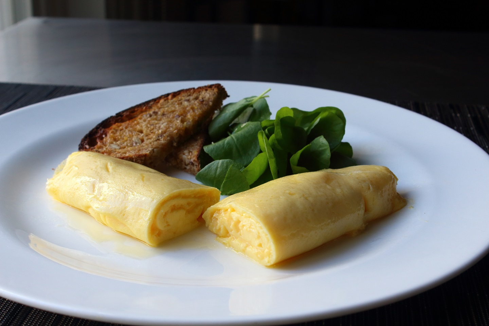

Omelette

Classic French omelette. Eggs and butter, what else could you ask for?
Ingredients
- 3 fresh eggs
- 1/4 teaspoon salt
- 1/2 teaspoon cold water
- 2 tablespoons unsalted butter, divided
- 1 pinch cayenne or white pepper to taste (optional)
Steps
- Whisk eggs, salt, and water together in a mixing bowl. Whisk until mixture is very liquid
and whites are completely blended in, 1 or 2 minutes.
- Heat 1 1/2 tablespoons butter in a 9- or 10-inch non-stick skillet over medium-high heat.
As soon as butter melts and before it starts to sizzle, pour in the whisked eggs. Stir in a
circular pattern with a heat-proof spatula, lifting and "scrambling" eggs, shaking pan to keep
leveling out the mixture, and scraping down the sides. Continue stirring until shaking the
pan no longer levels the eggs.
- Reduce heat to low. Using the spatula, smooth the surface of the eggs to move runny eggs to less
runny spots, working toward an even thickness. As soon as surface is wet but not runny, remove from heat.
- Starting at the handle side of the pan, use the spatula to begin rolling the omelette into a cylinder shape,
about 3 rolls until omelette is about 2 inches from opposite side of pan. Use spatula to fold the last flap of egg
over the top of the cylinder leaving the seam side up. Add cubes of the remaining 1/2 tablespoon butter to pan.
Gently push the butter as it melts under the omelette.
- Slide omelette to edge of pan. Flip onto a plate with the seam side down. Even out the shape, if necessary.
You can tuck in the ends, if you like. Brush surface with a bit more butter. Dust with cayenne pepper.
Source